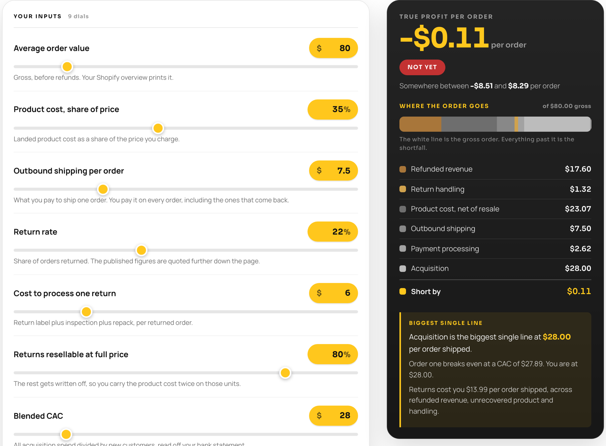

Four checks we run on a store before we touch a budget, and the order arithmetic underneath them. Four seconds is the timer, because that is about what a stranger gives a page they have never seen. All four take an afternoon.
RISE DTC / The first four seconds
Why this sheet exists
A product page is written for someone who already knows the brand. They read the reviews last week. For that reader it shows a price and gets out of the way, which is right.
Paid traffic sends someone else to the same page. They have never heard of you. Something in the feed was interesting enough to tap, and four seconds later they are being asked for a card number.
The ad has usually done its job by then. Somebody tapped. The next four seconds belong to a page with no introduction in it.
Nothing below needs a developer or a new tool. Four checks, in the order we run them, then the arithmetic underneath.
Scroll the drawing sideways ›
Check 01 · the arrival
Find the ad in your own feed, on the phone you actually carry, and tap it the way a customer would. A desktop preview inside Ads Manager loads a different page over a different connection, so it is not the same test.
You are looking for the gap between what the ad promised and what the screen delivers. If the ad sells relief from sore feet and the page opens on a grid of twelve colourways, the visitor has to do that translation themselves.
Count out loud from the moment the page paints. At four seconds, stop. Whatever is on the screen at that point is your entire pitch to a cold visitor.
Check 02 · the opening line
Read only what is visible before you scroll, and read it as a sentence you are saying to a person in front of you. When we run this, the sentence usually comes out as a product name, a price, and the word Add.
Said to a person, that is asking for money before saying who you are. The fix is one line above the price: who the product is for and what it does, in the words a customer would use.
Scroll the drawing sideways ›
Write the first screen down word for word. If a reader could not tell from it what you sell and who it is for, that line goes above the price today.
Check 03 · the outside read
Anyone outside the business will do. Open the page, hand over the phone, count four seconds, take it back. Then ask what this brand sells, and why they would give it their card.
You already know every answer, which is why this one cannot be run on yourself. Watch where they stall.
Write down every question they could not answer. Work through that list starting at the first screen.
Check 04 · the other door
The visitors who buy on a first visit are a small share of the ones you paid for. Your analytics will tell you how small. The rest arrived before they were ready to spend.
A product page offers those people exactly one action, and it happens to be the one they are not ready to take. They leave, the traffic gets blamed, and next month the same page gets a bigger budget pointed at it.
Give them a second thing to do that costs them nothing. Something worth reading, or one email that earns the right to send another. Ask for the card on a later visit.
Scroll the drawing sideways ›
Open your analytics and find what share of paid visitors bought in their first session. Subtract that from 100. Your page currently offers the remainder a single action they were never going to take.
The arithmetic underneath
The four checks are about the page. This part is about the order, and it is where the dashboard misleads: the figure it reports is the one before anyone has been paid.
An order arrives at your listed price. Your processor takes a percentage and a flat fee off every one. What is left is what your ad spend, product cost and shipping come out of.
Below is that subtraction on an $80 order. Treat the rate row as an input you replace. Rates differ by processor, by plan and by country. Read yours off a real payout rather than any number printed on a page, including this one.
Scroll the drawing sideways ›
Processing is only the first subtraction. Product cost, shipping, returns and acquisition all come out of the same $77.38, and the sheet below does the whole stack at once.
Here it is on an $80 order at 2.9%, every other dial left on its own worked apparel example: 35% product cost, $7.50 shipping, a 22% return rate, $6 to process a return, 80% of returns resellable, $28 blended acquisition.

That sheet runs in the browser with no email. Put your own rate, product cost, shipping and acquisition into it and read the number at the top. Open the sheet, or browse the other 24.
Ready when you are
From week one we run this on live Shopify and ad data, from the product pages through the order economics underneath. Book a 30 minute intro call and we will walk your store together.
Direct with the team. No pitch deck.